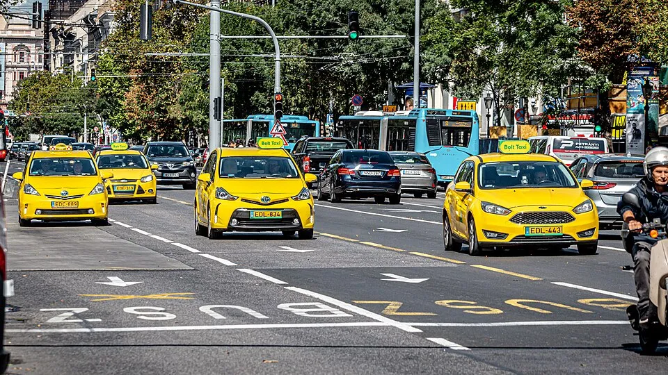
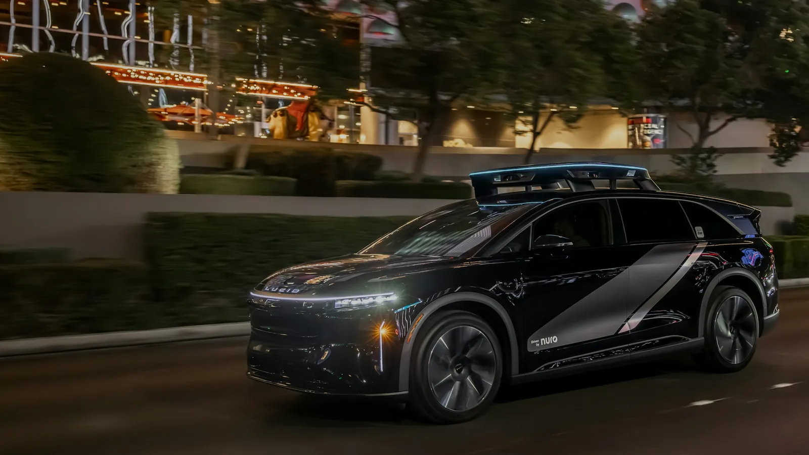

▲ 볼트(Bolt)는 유럽 최대 차량호출 플랫폼으로, 2억 명 이상의 이용자와 50여 개국 850개 도시에서 서비스 중이다. 루시드는 이 플랫폼에 자율주행 차량을 공급한다 ⓒ Wikimedia Commons
'볼트'라는 이름을 듣고 전기차 브랜드를 먼저 떠올렸다면, 이번엔 다른 회사다.
루시드모터스가 유럽 로보택시 시장 진출을 위해 손잡은 상대는 볼트(Bolt)다. 자동차 브랜드가 아니라 에스토니아 탈린에 본사를 둔 차량호출 플랫폼으로, 유럽 전역에서 우버에 맞먹는 존재감을 가진 회사다. 두 회사는 유럽 주요 도시에 최소 2만 5천 대의 자율주행 차량을 배치하는 파트너십을 발표했다. 루시드가 미국 밖에서 로보택시 사업을 추진하는 것은 이번이 처음이다.

▲ 루시드 그래비티 후면부. 루시드는 그동안 미국 내 로보택시 파트너십에 주력해왔다 ⓒ Wikimedia Commons
1. '볼트'는 어떤 회사인가
국내 보도에서 '볼트'로 옮겨진 이 회사의 정체는 Bolt, 에스토니아 마르쿠스 빌리그(Markus Villig)가 창업한 차량호출 플랫폼이다. 우버·리프트와 같은 업종이지만 활동 무대는 유럽에 집중돼 있다. 회사 측 발표에 따르면 2억 명 이상의 이용자, 450만 명의 드라이버·배달원이 50여 개국 850개 도시에서 볼트 플랫폼을 이용 중이며, 유럽 최대 차량호출 서비스로 꼽힌다. 전기차 브랜드 '볼보'나 다른 자동차 회사와는 무관한, 순수 모빌리티 플랫폼 기업이라는 점을 짚고 넘어갈 필요가 있다.
📍 볼트의 자율주행 전담 조직
볼트는 이번 파트너십을 자율주행 전담 사업부인 '볼트 오토노머스 드라이빙 솔루션즈(Bolt Autonomous Driving Solutions)'를 통해 추진한다. 이 조직은 차량·소프트웨어·안전·이용자 경험 요건을 정의하고, 배치될 차량을 직접 소유·운영하며, 충전 인프라 구축과 도시별 규제 협의까지 담당한다. 루시드는 차량 제조사 역할에 집중하는 구조다.
2. 파트너십 구조 — 루시드가 만들고, 볼트가 운영한다
| 구분 | 루시드(Lucid) | 볼트(Bolt) |
|---|---|---|
| 역할 | 차량 플랫폼·자율주행 하드웨어 개발 | 차량 소유·운영, 인프라·도시 협의 |
| 생산 | 사우디아라비아 공장 생산 계획 | - |
| 요건 정의 | - | 차량·소프트웨어·안전·이용자 경험 기준 수립 |
| 목표 규모 | 1차 2만 5천 대 → 2035년까지 10만 대(볼트 플랫폼 전체 목표) | |

▲ 루시드의 현행 SUV '그래비티'. 이번 로보택시 배치는 그래비티가 아니라 아직 출시 전인 별도의 미드사이즈 플랫폼을 기반으로 한다 ⓒ Wikimedia Commons
3. 문제는 '아직 존재하지 않는' 플랫폼
이번 발표에서 가장 중요한 변수는 여기 있다. 2만 5천 대에 들어갈 차량은 루시드의 미드사이즈(Midsize) 플랫폼을 기반으로 하는데, 이 플랫폼은 아직 출시되지 않았다. 루시드는 실비오 나폴리(Silvio Napoli)가 새 CEO로 취임한 직후인 2026년 6월 전체 인력의 약 18%를 감축했고, 이어 8월에는 14억 달러 규모 현금 절감을 골자로 한 경영 정상화 계획을 발표하면서 미드사이즈 프로그램의 양산 시점을 2027년 하반기로 재차 연기했다. 미드사이즈 플랫폼의 수석 엔지니어였던 잭 워커(Zach Walker) 역시 최근 회사를 떠난 것으로 알려졌다. 현재 시장에 나와 있는 대형 세단 '에어(Air)'나 SUV '그래비티(Gravity)'와는 다른, 상대적으로 작고 저렴한 신규 차급으로 계획됐던 라인업이다.
✅ 아직 확정되지 않은 것들
· 기반 플랫폼 — 루시드 미드사이즈 플랫폼은 개발이 지연된 상태로, 아직 실차가 없다
· 정식 계약 — 양사는 금전 거래나 정식 발주 없이 파트너십만 발표했다
· 배치 시점 — 2만 5천 대가 언제까지 배치될지 구체적 일정은 공개되지 않았다
· 자율주행 소프트웨어 — 루시드는 차량만 공급하며, 실제 자율주행 소프트웨어는 별도 기술 파트너가 맡을 예정이나 아직 특정되지 않았다
4. 엔비디아 하이페리온과 SAE 레벨4
차량 자체의 하드웨어 방향성은 비교적 뚜렷하다. 배치될 차량은 SAE 레벨4 자율주행을 목표로 하며, 엔비디아의 하이페리온(Hyperion) 아키텍처를 기반으로 한다. 하이페리온은 고성능 컴퓨팅과 표준화된 센서 구성을 하나로 묶은 양산 대응형 레퍼런스 아키텍처로 소개된다. 다만 하드웨어 아키텍처가 정해졌다고 해서 실제 자율주행 소프트웨어 완성도가 보장되는 것은 아니라는 점은 염두에 둘 필요가 있다.

▲ 2026년 CES에서 공개된 루시드·누로·우버의 그래비티 기반 로보택시. 유럽 볼트 파트너십과는 별개로, 루시드가 미국에서 먼저 운영 중인 로보택시 사업이다 ⓒ Nuro
파트너십 발표 원문은 아래에서 확인할 수 있다. Electrek 원문 바로가기
5. 미국 밖으로, 왜 유럽이고 왜 볼트인가
루시드는 그동안 미국 내 로보택시 파트너십에 집중해왔다. 이번 볼트와의 제휴는 루시드가 미국 밖에서 처음으로 추진하는 로보택시 사업이라는 점에서 상징적이다. 볼트 입장에서도 2035년까지 자사 플랫폼에 자율주행 차량 10만 대를 올리겠다는 목표를 향한 첫 대규모 파트너로 루시드를 택했다. 우버·웨이모 같은 미국계 플레이어가 아니라 유럽 토종 플랫폼을 상대로 한 계약이라는 점에서, 규제·도시 협의 측면에서 유럽 현지 네트워크를 가진 볼트의 역할이 클 것으로 보인다.
6. 요약
루시드모터스가 유럽 최대 차량호출 플랫폼 '볼트(Bolt)'와 손잡고 유럽 주요 도시에 최소 2만 5천 대의 자율주행 차량을 배치하는 파트너십을 발표했다. 볼트는 에스토니아 기반으로 50여 개국 850개 도시에서 서비스하는 차량호출 회사다.
차량은 루시드의 미드사이즈 플랫폼을 기반으로 SAE 레벨4, 엔비디아 하이페리온 아키텍처를 채택할 예정이지만, 이 플랫폼은 아직 출시되지 않았고 개발 일정도 최근 연기됐다. 정식 계약금이나 발주 역시 이뤄지지 않은 상태다.
루시드에게는 미국 밖 첫 로보택시 사업, 볼트에게는 2035년 10만 대 목표를 향한 첫 대규모 파트너십이라는 점에서 의미가 있지만, 실현까지는 넘어야 할 변수가 많다.